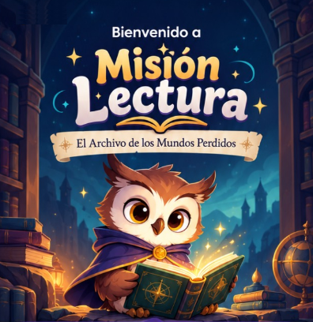
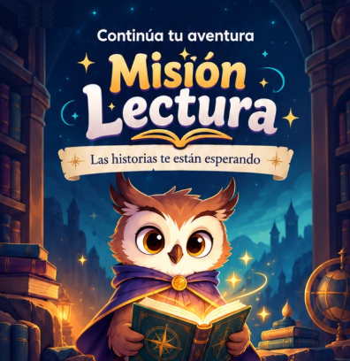
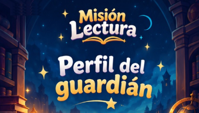

<!DOCTYPE html>
<html lang="es">
<head>
  <meta charset="UTF-8" />
  <meta name="viewport" content="width=device-width, initial-scale=1.0, maximum-scale=1.0, user-scalable=no, viewport-fit=cover" />
  <meta name="theme-color" content="#130E2B" />
  <meta name="apple-mobile-web-app-capable" content="yes" />
  <meta name="apple-mobile-web-app-status-bar-style" content="black-translucent" />
  <title>Misión Lectura: El Archivo de los Mundos Perdidos</title>
  
  <!-- Preconexión para acelerar carga de fuentes y CDNs en WebView y navegador -->
  <link rel="preconnect" href="https://fonts.googleapis.com">
  <link rel="preconnect" href="https://fonts.gstatic.com" crossorigin>
  <link rel="preconnect" href="https://unpkg.com" crossorigin>
  
  <!-- Tailwind CSS (Local para soporte 100% Offline en APK/LAN + Fallback CDN) -->
  <script src="./vendor/tailwindcss.js" onerror="this.onerror=null;this.src='https://cdn.tailwindcss.com'"></script>
  
  <!-- Fuentes de Google (Cinzel para fantasía serif y Nunito para lectura infantil) -->
  <link href="https://fonts.googleapis.com/css2?family=Cinzel:wght@700;800;900&family=Nunito:wght@500;600;700;800;900&display=swap" rel="stylesheet">
  
  <!-- React y Babel (Local para soporte 100% Offline en APK/LAN + Fallback CDN) -->
  <script src="./vendor/react.production.min.js" onerror="this.onerror=null;this.src='https://unpkg.com/react@18/umd/react.production.min.js'"></script>
  <script src="./vendor/react-dom.production.min.js" onerror="this.onerror=null;this.src='https://unpkg.com/react-dom@18/umd/react-dom.production.min.js'"></script>
  <script src="./vendor/babel.min.js" onerror="this.onerror=null;this.src='https://unpkg.com/@babel/standalone/babel.min.js'"></script>

  <style>
    body {
      font-family: 'Nunito', sans-serif;
      background-color: #0B081D;
      margin: 0;
      padding: env(safe-area-inset-top, 0px) env(safe-area-inset-right, 0px) env(safe-area-inset-bottom, 0px) env(safe-area-inset-left, 0px);
      user-select: none;
      -webkit-user-select: none;
      -webkit-tap-highlight-color: transparent;
      overscroll-behavior-y: none;
    }
    input, textarea {
      user-select: text;
      -webkit-user-select: text;
    }
    .font-magic {
      font-family: 'Cinzel', serif;
    }
    .no-scrollbar::-webkit-scrollbar { display: none; }
    .no-scrollbar { -ms-overflow-style: none; scrollbar-width: none; }
    @keyframes floatSlow {
      0%, 100% { transform: translateY(0px); }
      50% { transform: translateY(-4px); }
    }
    .animate-float {
      animation: floatSlow 3.5s ease-in-out infinite;
    }
    /* Patrón sutil de brújula mística en las tarjetas */
    .bg-magic-card {
      background: linear-gradient(180deg, #281F54 0%, #201844 55%, #171133 100%);
    }
    .bg-parchment-ribbon {
      background: linear-gradient(90deg, #DFC699 0%, #F5E6C8 50%, #DFC699 100%);
    }
  </style>
</head>
<body class="flex justify-center items-center min-h-screen bg-[#0B081D] text-white">

  <div id="root" class="w-full flex justify-center"></div>

  <script type="text/babel">
    const { useState, useEffect } = React;

    // =========================================================================
    // DATOS PEDAGÓGICOS Y MUNDOS (Alineados al Diseño Instruccional - 5.° Grado)
    // Institución Educativa San José de Marinilla, Antioquia
    // =========================================================================
    const INITIAL_WORLDS = [
      {
        id: 1,
        title: 'Cámara de las pistas',
        category: 'Comprensión literal',
        textType: 'Texto Narrativo',
        status: 'available', // Se inicia desde 0 con el Mundo 1 Disponible
        sceneEmoji: '🏛️✨',
        thumbnail: './assets/world-1.png',
        bgGradient: 'from-amber-900 via-amber-700 to-yellow-600',
        artifact: {
          name: 'Llave del Reloj Solar',
          icon: '🗝️',
          desc: 'Reliquia recuperada al localizar información explícita con precisión.'
        },
        explorationIntro: 'En esta primera cámara aprenderás a localizar datos exactos que están escritos directamente en el pergamino sin inventar ni suponer detalles externos.',
        readingTitle: 'El Secreto del Reloj de Arena de Marinilla',
        readingPassage: [
          'En la galería más antigua del Archivo de los Mundos Perdidos, el búho guardián Aurelio custodiaba el Reloj de Arena Solar. Cada viernes a las cinco de la tarde, cuando el sol teñía de oro las montañas de Marinilla, Aurelio giraba el reloj exactamente tres veces hacia la izquierda usando su pluma plateada.',
          'Dentro del pedestal de piedra reposaba un cofre de madera de cedro cerrado con dos candados de bronce. Una inscripción tallada en la base advertía a los aprendices: "Quien desee abrir el cofre para restaurar el primer fragmento deberá pronunciar el nombre del árbol sagrado y entregar cuatro semillas de roble dorado al guardián del umbral".'
        ],
        clueHighlight: 'Fíjate en los datos exactos del primer y segundo párrafo: el instrumento que usa Aurelio, el material del cofre y la cantidad exacta de semillas.',
        missions: [
          {
            id: 'm1_1',
            stepTitle: 'Misión 1 de 3: Localización de objetos y acciones',
            question: 'Según lo escrito explícitamente en el primer párrafo, ¿con qué objeto giraba Aurelio el Reloj de Arena Solar cada viernes?',
            options: [
              'Con una llave de bronce antiguo.',
              'Con su pluma plateada.',
              'Con una rama de roble dorado.'
            ],
            correctOption: 1,
            evidencePrompt: 'Justifica tu decisión seleccionando el fragmento exacto del texto que demuestra tu respuesta:',
            evidences: [
              '"...Aurelio giraba el reloj exactamente tres veces hacia la izquierda usando su pluma plateada."',
              '"...en la galería más antigua del Archivo de los Mundos Perdidos..."',
              '"...cerrado con dos candados de bronce."'
            ],
            correctEvidence: 0,
            feedbackSuccess: '¡Excelente localización literal! Identificaste el dato explícito y lo respaldaste con la cita textual exacta.'
          },
          {
            id: 'm1_2',
            stepTitle: 'Misión 2 de 3: Identificación de características explícitas',
            question: 'De acuerdo con el texto, ¿de qué material estaba construido el cofre que reposaba dentro del pedestal de piedra?',
            options: [
              'De piedra tallada y cristal azul.',
              'De oro macizo de las montañas.',
              'De madera de cedro con dos candados de bronce.'
            ],
            correctOption: 2,
            evidencePrompt: '¿Qué evidencia textual respalda tu respuesta?',
            evidences: [
              '"Cada viernes a las cinco de la tarde, cuando el sol teñía de oro las montañas..."',
              '"Dentro del pedestal de piedra reposaba un cofre de madera de cedro cerrado con dos candados de bronce."',
              '"...pronunciar el nombre del árbol sagrado..."'
            ],
            correctEvidence: 1,
            feedbackSuccess: '¡Muy bien, Guardián! Has distinguido con exactitud los materiales descritos en la lectura.'
          },
          {
            id: 'm1_3',
            stepTitle: 'Misión 3 de 3: Condición literal del pergamino',
            question: '¿Qué elementos exactos exige la inscripción tallada para poder abrir el cofre y restaurar el primer fragmento?',
            options: [
              'Pronunciar el nombre del árbol sagrado y entregar cuatro semillas de roble dorado.',
              'Girar el reloj cinco veces a la medianoche en silencio.',
              'Entregar dos plumas plateadas y tres monedas de bronce.'
            ],
            correctOption: 0,
            evidencePrompt: 'Selecciona la cita del texto que comprueba tu elección:',
            evidences: [
              '"...el búho guardián Aurelio custodiaba el Reloj de Arena Solar."',
              '"...giraba el reloj exactamente tres veces hacia la izquierda..."',
              '"...deberá pronunciar el nombre del árbol sagrado y entregar cuatro semillas de roble dorado al guardián del umbral."'
            ],
            correctEvidence: 2,
            feedbackSuccess: '¡Cámara de las Pistas superada! Has recuperado la primera historia y desbloqueado el Bosque de las Inferencias.'
          }
        ]
      },
      {
        id: 2,
        title: 'Bosque de las inferencias',
        category: 'Comprensión inferencial',
        textType: 'Texto Narrativo - Descriptivo',
        status: 'locked',
        sceneEmoji: '🌳🔮',
        thumbnail: './assets/world-2.png',
        bgGradient: 'from-teal-900 via-emerald-800 to-cyan-700',
        artifact: {
          name: 'Cristal de la Deducción',
          icon: '🔮',
          desc: 'Otorgado por deducir información implícita a partir de las pistas del texto.'
        },
        explorationIntro: 'En este bosque la respuesta no está dicha directamente con las mismas palabras; deberás unir las pistas del texto para deducir lo que ocurre.',
        readingTitle: 'Los Viajeros del Sendero de Niebla',
        readingPassage: [
          'Cuando Valeria y Tomás cruzaron el puente hacia el Bosque de los Susurros, el cielo se cubrió de nubes color ceniza. Tomás guardó su mapa de papel dentro de su chaqueta impermeable, subió el cierre hasta el cuello y observó cómo su aliento se convertía en pequeñas nubes blancas al hablar.',
          'A pocos metros, encontraron una fogata cuyas brasas aún brillaban con un suave color naranja y, junto a un tronco caído, vieron una taza metálica que todavía desprendía vapor de chocolate caliente. Sin embargo, alrededor del campamento no se escuchaba ninguna voz y las huellas sobre el barro fresco se dirigían apresuradamente hacia la cueva del norte.'
        ],
        clueHighlight: 'Observa las pistas físicas: el aliento blanco, la chaqueta hasta el cuello, el vapor de la taza y las brasas aún encendidas.',
        missions: [
          {
            id: 'm2_1',
            stepTitle: 'Misión 1 de 3: Inferencia climática y ambiental',
            question: 'Aunque el texto no menciona la temperatura con un número, ¿qué se puede inferir sobre el clima en el Bosque de los Susurros?',
            options: [
              'Hacía mucho calor porque había una fogata encendida.',
              'Hacía mucho frío y estaba próximo a llover.',
              'Era un día soleado y seco de verano.'
            ],
            correctOption: 1,
            evidencePrompt: '¿Qué pistas del texto te permiten hacer esta inferencia?',
            evidences: [
              '"...el cielo se cubrió de nubes color ceniza... subió el cierre hasta el cuello y observó cómo su aliento se convertía en pequeñas nubes blancas..."',
              '"...Valeria y Tomás cruzaron el puente hacia el Bosque de los Susurros..."',
              '"...las huellas sobre el barro fresco se dirigían hacia la cueva del norte."'
            ],
            correctEvidence: 0,
            feedbackSuccess: '¡Inferencia impecable! Relacionaste las nubes ceniza, el abrigo y el vapor del aliento para deducir el frío.'
          },
          {
            id: 'm2_2',
            stepTitle: 'Misión 2 de 3: Deducción temporal de los hechos',
            question: '¿Qué podemos deducir sobre las personas que estaban en el campamento antes de que llegaran Valeria y Tomás?',
            options: [
              'Que abandonaron el campamento hace muchos meses.',
              'Que se habían marchado hacía muy pocos minutos de forma rápida.',
              'Que nunca hubo nadie acampando en ese lugar.'
            ],
            correctOption: 1,
            evidencePrompt: 'Elige la evidencia del texto que sostiene esta conclusión lógica:',
            evidences: [
              '"Tomás guardó su mapa de papel dentro de su chaqueta impermeable..."',
              '"...las brasas aún brillaban con un suave color naranja y... una taza metálica que todavía desprendía vapor... las huellas sobre el barro fresco se dirigían apresuradamente..."',
              '"Cuando Valeria y Tomás cruzaron el puente hacia el Bosque..."'
            ],
            correctEvidence: 1,
            feedbackSuccess: '¡Gran trabajo deductivo! Si las brasas brillan y la bebida aún humea, significa que se fueron hace instantes.'
          },
          {
            id: 'm2_3',
            stepTitle: 'Misión 3 de 3: Propósito implícito de una acción',
            question: '¿Por qué razón Tomás guardó el mapa de papel dentro de su chaqueta impermeable al mirar el cielo?',
            options: [
              'Para evitar que el mapa se mojara y se dañara si empezaba a llover.',
              'Porque ya no necesitaba el mapa para regresar a su casa.',
              'Para esconderlo de su compañera Valeria.'
            ],
            correctOption: 0,
            evidencePrompt: 'Selecciona la pista textual que explica el motivo de Tomás:',
            evidences: [
              '"...junto a un tronco caído, vieron una taza metálica..."',
              '"...el cielo se cubrió de nubes color ceniza. Tomás guardó su mapa de papel dentro de su chaqueta impermeable..."',
              '"...alrededor del campamento no se escuchaba ninguna voz..."'
            ],
            correctEvidence: 1,
            feedbackSuccess: '¡Bosque de las Inferencias completado! Ahora tienes acceso a la Ciudad de las Voces.'
          }
        ]
      },
      {
        id: 3,
        title: 'Ciudad de las voces',
        category: 'Intención y significado',
        textType: 'Texto Instructivo y Normativo',
        status: 'locked',
        sceneEmoji: '🏰🌙',
        thumbnail: './assets/world-3.png',
        bgGradient: 'from-indigo-950 via-purple-900 to-slate-800',
        artifact: {
          name: 'Pluma de los Escribas',
          icon: '🪶',
          desc: 'Símbolo de quien comprende el propósito comunicativo y el sentido de las instrucciones.'
        },
        explorationIntro: 'En la Ciudad de las Voces analizarás textos instructivos e informativos para descubrir qué pretende lograr el autor y qué significan sus expresiones en contexto.',
        readingTitle: 'Manual del Restaurador de Pergaminos Antiguos',
        readingPassage: [
          'AVISO OFICIAL DEL ARCHIVO CENTRAL: Todo guardián que ingrese al Taller de Restauración debe seguir estrictamente estos pasos antes de tocar un libro milenario: 1) Lavar y secar completamente sus manos; 2) Colocarse los guantes de algodón blanco; 3) Usar la brocha de cerdas suaves para retirar el polvo superficial desde el centro hacia los bordes, nunca en sentido contrario.',
          'Recuerda que las páginas antiguas son "alas de mariposa": cualquier presión brusca o rastro de humedad puede quebrar sus fibras para siempre y borrar la memoria de un pueblo entero.'
        ],
        clueHighlight: 'Presta atención a la finalidad de las reglas enumeradas y a la metáfora "alas de mariposa" en el segundo párrafo.',
        missions: [
          {
            id: 'm3_1',
            stepTitle: 'Misión 1 de 3: Intención comunicativa del texto',
            question: '¿Cuál es el propósito principal por el cual fue escrito este texto del Archivo Central?',
            options: [
              'Entretener al lector con una leyenda fantástica sobre mariposas mágicas.',
              'Instruir y orientar paso a paso sobre cómo manipular los libros antiguos sin dañarlos.',
              'Vender guantes de algodón y brochas de cerdas suaves a los visitantes.'
            ],
            correctOption: 1,
            evidencePrompt: '¿Qué parte del texto demuestra que su intención es dar instrucciones de cuidado?',
            evidences: [
              '"Todo guardián que ingrese al Taller de Restauración debe seguir estrictamente estos pasos antes de tocar un libro milenario: 1) Lavar... 2) Colocarse... 3) Usar..."',
              '"...borrar la memoria de un pueblo entero."',
              '"...desde el centro hacia los bordes..."'
            ],
            correctEvidence: 0,
            feedbackSuccess: '¡Correcto! Reconociste la estructura y propósito de un texto instructivo.'
          },
          {
            id: 'm3_2',
            stepTitle: 'Misión 2 de 3: Interpretación de lenguaje figurado',
            question: 'Cuando el manual afirma que las páginas antiguas son "alas de mariposa", ¿qué significa esa expresión dentro del texto?',
            options: [
              'Que los libros pueden salir volando por las ventanas del taller.',
              'Que las páginas están decoradas con dibujos de insectos de colores.',
              'Que las hojas son sumamente frágiles y delicadas ante cualquier descuido.'
            ],
            correctOption: 2,
            evidencePrompt: '¿Qué explicación del propio texto confirma ese significado?',
            evidences: [
              '"...cualquier presión brusca o rastro de humedad puede quebrar sus fibras para siempre..."',
              '"...Colocarse los guantes de algodón blanco..."',
              '"AVISO OFICIAL DEL ARCHIVO CENTRAL..."'
            ],
            correctEvidence: 0,
            feedbackSuccess: '¡Muy bien interpretado! Comprendiste el sentido figurado apoyándote en el contexto de la frase.'
          },
          {
            id: 'm3_3',
            stepTitle: 'Misión 3 de 3: Secuencia y procedimiento',
            question: 'Según las instrucciones del manual, ¿cómo debe utilizarse la brocha de cerdas suaves sobre el libro?',
            options: [
              'Frotando con fuerza desde los bordes hacia el centro con las manos húmedas.',
              'Retirando el polvo superficial desde el centro hacia los bordes, nunca al revés.',
              'Antes de lavarse las manos y sin ponerse los guantes de algodón.'
            ],
            correctOption: 1,
            evidencePrompt: 'Selecciona el fragmento exacto que valida tu decisión:',
            evidences: [
              '"1) Lavar y secar completamente sus manos;"',
              '"3) Usar la brocha de cerdas suaves para retirar el polvo superficial desde el centro hacia los bordes, nunca en sentido contrario."',
              '"...borrar la memoria de un pueblo entero."'
            ],
            correctEvidence: 1,
            feedbackSuccess: '¡Ciudad de las Voces liberada! El Tribunal de los Lectores ha abierto sus puertas.'
          }
        ]
      },
      {
        id: 4,
        title: 'Tribunal de los lectores',
        category: 'Comprensión crítica',
        textType: 'Texto Argumentativo - Crónico',
        status: 'locked',
        sceneEmoji: '⚖️🕯️',
        thumbnail: './assets/world-4.png',
        bgGradient: 'from-amber-950 via-stone-800 to-yellow-900',
        artifact: {
          name: 'Balanza del Juicio Lector',
          icon: '⚖️',
          desc: 'Concedida por contrastar posturas y evaluar argumentos con evidencias sólidas.'
        },
        explorationIntro: 'En el Tribunal evaluarás dos posturas distintas frente a un problema de la comunidad y tomarás una posición crítica justificada con hechos del texto.',
        readingTitle: 'El Debate por la Biblioteca del Valle',
        readingPassage: [
          'En el consejo del Valle de San José se discute el futuro de la Biblioteca Escolar. El consejero Darío propone cerrarla definitivamente y vender los libros impresos, asegurando que "hoy ningún estudiante necesita leer textos largos porque en las redes sociales hay videos de quince segundos sobre cualquier tema".',
          'Por el contrario, la maestra Elena sostiene que la biblioteca debe fortalecerse con talleres y tabletas digitales de consulta, pues "los videos cortos informan rápido, pero la lectura profunda de libros e historias entrena la mente para investigar, dudar de las noticias falsas y argumentar con pruebas reales". Un estudio realizado en la escuela demostró que los estudiantes que asisten al club de lectura resolvieron un 75% más de retos de ciencias y convivencia.'
        ],
        clueHighlight: 'Compara qué pruebas ofrece Darío (una opinión general) frente a los datos y razones pedagógicas que presenta la maestra Elena.',
        missions: [
          {
            id: 'm4_1',
            stepTitle: 'Misión 1 de 3: Evaluación de argumentos y evidencias',
            question: 'Desde una lectura crítica, ¿cuál de las dos posturas está mejor fundamentada con hechos comprobables dentro del texto?',
            options: [
              'La del consejero Darío, porque los videos de quince segundos reemplazan toda la ciencia.',
              'La de la maestra Elena, porque explica el valor formativo de leer e incluye un dato del estudio escolar (75% de mejora).',
              'Ninguna de las dos posturas presenta razones sobre la biblioteca.'
            ],
            correctOption: 1,
            evidencePrompt: '¿Qué evidencia objetiva del texto respalda la solidez del argumento de Elena?',
            evidences: [
              '"...vender los libros impresos, asegurando que hoy ningún estudiante necesita leer..."',
              '"Un estudio realizado en la escuela demostró que los estudiantes que asisten al club de lectura resolvieron un 75% más de retos de ciencias y convivencia."',
              '"En el consejo del Valle de San José se discute el futuro de la Biblioteca..."'
            ],
            correctEvidence: 1,
            feedbackSuccess: '¡Excelente juicio crítico! Distinguiste entre una afirmación sin pruebas y un argumento respaldado por evidencias.'
          },
          {
            id: 'm4_2',
            stepTitle: 'Misión 2 de 3: Detección de generalizaciones débiles',
            question: '¿Cuál es el error principal en el argumento del consejero Darío cuando pide cerrar la biblioteca?',
            options: [
              'Que propone combinar libros impresos con tabletas digitales.',
              'Que asume sin pruebas que ver videos de 15 segundos desarrolla las mismas habilidades que la lectura profunda.',
              'Que quiere abrir más clubes de lectura en la escuela.'
            ],
            correctOption: 1,
            evidencePrompt: 'Selecciona el fragmento donde se evidencia la postura reduccionista de Darío:',
            evidences: [
              '"...asegurando que hoy ningún estudiante necesita leer textos largos porque en las redes sociales hay videos de quince segundos sobre cualquier tema."',
              '"...entrena la mente para investigar, dudar de las noticias falsas..."',
              '"...fortalecerse con talleres y tabletas digitales de consulta..."'
            ],
            correctEvidence: 0,
            feedbackSuccess: '¡Muy bien! Identificaste una generalización apresurada dentro del debate.'
          },
          {
            id: 'm4_3',
            stepTitle: 'Misión 3 de 3: Toma de postura fundamentada',
            question: 'Según la propuesta de la maestra Elena, ¿por qué la lectura profunda sigue siendo indispensable frente a las noticias de internet?',
            options: [
              'Porque impide que los estudiantes utilicen computadores o teléfonos.',
              'Porque entrena la mente para investigar, dudar de las noticias falsas y argumentar con pruebas reales.',
              'Porque es la única forma de pasar el tiempo libre en el recreo.'
            ],
            correctOption: 1,
            evidencePrompt: 'Elige la cita textual que sustenta esta conclusión crítica:',
            evidences: [
              '"...la lectura profunda de libros e historias entrena la mente para investigar, dudar de las noticias falsas y argumentar con pruebas reales."',
              '"El consejero Darío propone cerrarla definitivamente..."',
              '"...videos de quince segundos sobre cualquier tema."'
            ],
            correctEvidence: 0,
            feedbackSuccess: '¡Tribunal de los Lectores superado! Has desbloqueado la misión final integradora: ¡La Bóveda del Archivo!'
          }
        ]
      },
      {
        id: 5,
        title: 'La bóveda del archivo',
        category: 'Misión final',
        textType: 'Misión Integradora (Literal, Inferencial y Crítica)',
        status: 'locked',
        isFinalVault: true,
        sceneEmoji: '🌟🚪',
        thumbnail: './assets/world-5.png',
        bgGradient: 'from-amber-500 via-yellow-600 to-amber-800',
        artifact: {
          name: 'Códice Maestro de los Mundos Perdidos',
          icon: '👑',
          desc: 'Máxima distinción otorgada al Guardián que integra comprensión literal, inferencial y crítica con evidencia textual.'
        },
        explorationIntro: '¡Has llegado a la Bóveda del Archivo! En esta misión integradora demostrarás tu dominio completo: localizarás un dato explícito, realizarás una inferencia y justificarás una decisión crítica con evidencias del texto.',
        readingTitle: 'El Códice de las Tres Llaves de San José',
        readingPassage: [
          'Frente a la gran puerta dorada de la Bóveda, el búho Aurelio extendió el último pergamino integrador: "Hace cien años, los fundadores ocultaron aquí el Códice de la Memoria para protegerlo del Olvido Gris. El mecanismo de apertura consta de tres engranajes: el engranaje de Cobre se activa al mediodía; el de Plata responde únicamente cuando dos guardianes leen en voz alta al mismo tiempo; y el de Oro solo gira cuando se coloca sobre el altar una semilla de ceiba recolectada en la ribera del río Negro".',
          'Cuando el aprendiz Mateo intentó abrir la bóveda él solo a las doce del día llevando la semilla de ceiba en su bolsillo, el engranaje de Cobre brilló y el de Oro comenzó a girar, pero la puerta permaneció inmóvil y el engranaje de Plata siguió apagado. En un mural cercano se leía: "Un verdadero Guardián no busca el conocimiento para encerrarlo en soledad, sino para compartirlo con su comunidad".'
        ],
        clueHighlight: 'Esta misión final evalúa las 3 competencias del proyecto: 1) Literal (qué pide cada engranaje), 2) Inferencial (por qué falló Mateo) y 3) Crítica (el valor comunitario de la lectura).',
        missions: [
          {
            id: 'm5_1',
            stepTitle: 'Reto Integrador 1/3 (Nivel Literal): Información explícita',
            question: 'Según el pergamino, ¿qué elemento específico se debe colocar sobre el altar para que gire el engranaje de Oro?',
            options: [
              'Una semilla de ceiba recolectada en la ribera del río Negro.',
              'Una moneda de plata encontrada en la montaña.',
              'Un reloj de cobre activado a la medianoche.'
            ],
            correctOption: 0,
            evidencePrompt: 'Selecciona la evidencia textual explícita:',
            evidences: [
              '"...el engranaje de Cobre se activa al mediodía..."',
              '"...y el de Oro solo gira cuando se coloca sobre el altar una semilla de ceiba recolectada en la ribera del río Negro."',
              '"...el engranaje de Plata siguió apagado."'
            ],
            correctEvidence: 1,
            feedbackSuccess: '¡Paso 1 completado! Has localizado con precisión la condición literal del engranaje de Oro.'
          },
          {
            id: 'm5_2',
            stepTitle: 'Reto Integrador 2/3 (Nivel Inferencial): Deducción de causa',
            question: '¿Por qué razón no se abrió la puerta de la Bóveda cuando Mateo intentó activarla al mediodía con la semilla de ceiba?',
            options: [
              'Porque llegó de noche y olvidó llevar la semilla de ceiba.',
              'Porque fue él solo, y el engranaje de Plata exigía que dos guardianes leyeran en voz alta al mismo tiempo.',
              'Porque el engranaje de Cobre estaba roto desde hacía cien años.'
            ],
            correctOption: 1,
            evidencePrompt: '¿Qué fragmentos del texto permiten inferir la causa del fallo de Mateo?',
            evidences: [
              '"...el de Plata responde únicamente cuando dos guardianes leen en voz alta al mismo tiempo... Cuando el aprendiz Mateo intentó abrir la bóveda él solo... el engranaje de Plata siguió apagado."',
              '"Hace cien años, los fundadores ocultaron aquí el Códice de la Memoria..."',
              '"...el engranaje de Cobre brilló y el de Oro comenzó a girar..."'
            ],
            correctEvidence: 0,
            feedbackSuccess: '¡Inferencia maestra! Conectaste la regla del engranaje de Plata con el hecho de que Mateo acudió solo.'
          },
          {
            id: 'm5_3',
            stepTitle: 'Reto Integrador 3/3 (Nivel Crítico): Justificación de sentido y valor',
            question: 'Relacionando el funcionamiento del engranaje de Plata con el mensaje del mural, ¿qué enseñanza crítica transmiten los fundadores sobre la lectura y el conocimiento?',
            options: [
              'Que el conocimiento debe guardarse en secreto para que nadie más lo lea.',
              'Que el aprendizaje y la lectura alcanzan su verdadero valor cuando se construyen y comparten en comunidad.',
              'Que solo los metales preciosos tienen valor dentro de una biblioteca.'
            ],
            correctOption: 1,
            evidencePrompt: 'Justifica tu conclusión seleccionando la evidencia del mural que respalda este propósito:',
            evidences: [
              '"...intentó abrir la bóveda él solo a las doce del día..."',
              '"Un verdadero Guardián no busca el conocimiento para encerrarlo en soledad, sino para compartirlo con su comunidad."',
              '"...recolectada en la ribera del río Negro."'
            ],
            correctEvidence: 1,
            feedbackSuccess: '¡FELICITACIONES, MAESTRO DEL ARCHIVO! Has completado las 15 misiones de los 5 mundos utilizando evidencias textuales.'
          }
        ]
      }
    ];

    // =========================================================================
    // ICONOS SVG PERSONALIZADOS FIELES A LOS DISEÑOS PROFESIONALES
    // =========================================================================
    const MagicBookIcon = () => (
      <svg viewBox="0 0 48 48" className="w-11 h-11 drop-shadow-[0_2px_6px_rgba(248,184,48,0.45)] shrink-0">
        <g transform="rotate(-10 24 24)">
          <path d="M8 14 C14 12, 20 14, 24 17 C28 14, 34 12, 40 14 L40 34 C34 32, 28 34, 24 37 C20 34, 14 32, 8 34 Z" fill="#F8B830" stroke="#FFF3C4" strokeWidth="1.5" strokeLinejoin="round"/>
          <path d="M24 17 L24 37" stroke="#8C5818" strokeWidth="1.8" strokeLinecap="round"/>
          <path d="M8 34 C14 32, 20 34, 24 37 C28 34, 34 32, 40 34" fill="none" stroke="#B47218" strokeWidth="2.2"/>
        </g>
        <path d="M36 6 L37.2 9.5 L40.7 10.7 L37.2 11.9 L36 15.4 L34.8 11.9 L31.3 10.7 L34.8 9.5 Z" fill="#FDE047"/>
        <path d="M43 13 L43.6 15 L45.6 15.6 L43.6 16.2 L43 18.2 L42.4 16.2 L40.4 15.6 L42.4 15 Z" fill="#FDE047"/>
      </svg>
    );

    const InputIcon = ({ type }) => {
      if (type === 'user') {
        return (
          <svg viewBox="0 0 24 24" className="w-5 h-5 text-[#7F789D] mr-3 shrink-0" fill="currentColor">
            <path d="M12 12c2.76 0 5-2.24 5-5s-2.24-5-5-5-5 2.24-5 5 2.24 5 5 5zm0 2c-3.33 0-10 1.67-10 5v2h20v-2c0-3.33-6.67-5-10-5z"/>
          </svg>
        );
      }
      if (type === 'grade') {
        return (
          <svg viewBox="0 0 24 24" className="w-5 h-5 text-[#7F789D] mr-3 shrink-0" fill="currentColor">
            <path d="M12 3L1 9l11 6 9-4.91V17h2V9L12 3z M5 13.18v4L12 21l7-3.82v-4L12 17l-7-3.82z"/>
          </svg>
        );
      }
      return (
        <svg viewBox="0 0 24 24" className="w-5 h-5 text-[#7F789D] mr-3 shrink-0" fill="currentColor">
          <path d="M12.65 10C11.83 7.67 9.61 6 7 6c-3.31 0-6 2.69-6 6s2.69 6 6 6c2.61 0 4.83-1.67 5.65-4H17v4h4v-4h2v-4H12.65zM7 14c-1.1 0-2-.9-2-2s.9-2 2-2 2 .9 2 2-.9 2-2 2z"/>
        </svg>
      );
    };

    const CustomInput = ({ label, iconType, type = "text", placeholder, value, onChange }) => (
      <div className="mb-3.5 text-left">
        <label className="block text-white text-[13px] font-extrabold mb-1.5 ml-1 tracking-wide">{label}</label>
        <div className="flex items-center bg-[#F4EFEA] rounded-full px-4 py-3 shadow-[inset_0_2px_4px_rgba(0,0,0,0.12)] border-2 border-transparent focus-within:border-[#F8B830] transition-all">
          <InputIcon type={iconType} />
          <input
            type={type}
            placeholder={placeholder}
            value={value}
            onChange={onChange}
            className="bg-transparent w-full text-[#241E38] font-bold placeholder-[#8E87A8] focus:outline-none text-sm"
          />
        </div>
      </div>
    );

    const CustomButton = ({ text, onClick, disabled = false }) => (
      <button
        onClick={onClick}
        disabled={disabled}
        className={`w-full bg-gradient-to-r from-[#F6B12D] via-[#FCC948] to-[#F3A420] text-[#1D1636] font-black text-[17px] py-3 px-4 rounded-full shadow-[0_6px_18px_rgba(248,184,48,0.38)] active:scale-[0.98] transition-all flex items-center justify-between mt-3 ${disabled ? 'opacity-50 cursor-not-allowed' : 'hover:brightness-105'}`}
      >
        <span className="w-8"></span>
        <span className="tracking-tight">{text}</span>
        <span className="bg-[#231B44] text-[#F8C146] w-8 h-8 rounded-full flex items-center justify-center shadow-md">
          <svg viewBox="0 0 24 24" className="w-4 h-4" fill="none" stroke="currentColor" strokeWidth="3" strokeLinecap="round" strokeLinejoin="round">
            <path d="M5 12h14M13 6l6 6-6 6"/>
          </svg>
        </span>
      </button>
    );

    const StatCard = ({ imgSrc, fallbackIcon, label, value }) => (
      <div className="bg-[#211A49]/95 border border-[#493B7E] rounded-2xl p-2.5 text-center flex flex-col items-center justify-between shadow-lg">
        <div className="h-11 flex items-center justify-center mb-1">
           { e.target.style.display = 'none'; }}
          />
        </div>
        <span className="text-[11px] text-gray-200 leading-tight font-bold px-0.5">{label}</span>
        <span className="text-[22px] font-black text-[#F8C146] mt-0.5 leading-none drop-shadow">{value}</span>
      </div>
    );

    const NavIcon = ({ id, isActive }) => {
      const color = isActive ? '#F8C146' : '#A69ECF';
      if (id === 'dashboard') {
        return (
          <svg viewBox="0 0 24 24" className="w-6 h-6" fill={color}>
            <path d="M12 3L3 10.5v9a1.5 1.5 0 001.5 1.5h5v-6h5v6h5a1.5 1.5 0 001.5-1.5v-9L12 3z"/>
          </svg>
        );
      }
      if (id === 'map') {
        return (
          <svg viewBox="0 0 24 24" className="w-6 h-6" fill={color}>
            <path d="M15 5.1L9 3 3 5.02v16.2l6-2.33 6 2.1 6-2.02V2.77L15 5.1zm0 13.79l-6-2.11V5.11l6 2.11v11.67z"/>
          </svg>
        );
      }
      if (id === 'missions') {
        return (
          <svg viewBox="0 0 24 24" className="w-6 h-6" fill={color}>
            <path d="M14 2H6c-1.1 0-2 .9-2 2v16c0 1.1.9 2 2 2h12c1.1 0 2-.9 2-2V8l-6-6zm-2 15l-3.5-3.5 1.41-1.41L12 14.17l4.59-4.58L18 11l-6 6z"/>
          </svg>
        );
      }
      if (id === 'backpack') {
        return (
          <svg viewBox="0 0 24 24" className="w-6 h-6" fill={color}>
            <path d="M17 6V4c0-1.1-.9-2-2-2H9c-1.1 0-2 .9-2 2v2c-2.21 0-4 1.79-4 4v9c0 1.65 1.35 3 3 3h12c1.65 0 3-1.35 3-3v-9c0-2.21-1.79-4-4-4zM9 4h6v2H9V4zm7 11H8v-2h8v2z"/>
          </svg>
        );
      }
      return (
        <svg viewBox="0 0 24 24" className="w-6 h-6" fill={color}>
          <path d="M12 12c2.76 0 5-2.24 5-5s-2.24-5-5-5-5 2.24-5 5 2.24 5 5 5zm0 2c-3.33 0-10 1.67-10 5v2h20v-2c0-3.33-6.67-5-10-5z"/>
        </svg>
      );
    };

    const BottomNavBar = ({ activeTab, onSelectTab }) => {
      const tabs = [
        { id: 'dashboard', label: 'Inicio' },
        { id: 'map', label: 'Mapa' },
        { id: 'missions', label: 'Misiones' },
        { id: 'backpack', label: 'Mochila' },
        { id: 'profile', label: 'Perfil' },
      ];
      return (
        <div className="bg-gradient-to-b from-[#251E4E] to-[#171233] border-t-2 border-[#54468E] px-2 pt-2 pb-1.5 flex justify-around items-center rounded-t-[26px] shadow-[0_-6px_20px_rgba(0,0,0,0.5)] shrink-0 relative z-20">
          {tabs.map((tab) => {
            const isActive = activeTab === tab.id;
            return (
              <button
                key={tab.id}
                onClick={() => onSelectTab(tab.id)}
                className="flex flex-col items-center py-0.5 px-3 relative transition-all"
              >
                <div className={`transition-transform ${isActive ? 'scale-110 drop-shadow-[0_0_8px_rgba(248,193,70,0.5)]' : 'opacity-80'}`}>
                  <NavIcon id={tab.id} isActive={isActive} />
                </div>
                <span className={`text-[11px] font-extrabold mt-1 ${isActive ? 'text-[#F8C146]' : 'text-[#A69ECF]'}`}>
                  {tab.label}
                </span>
                <div className={`w-9 h-1 rounded-full mt-1 transition-all ${isActive ? 'bg-[#F8C146] shadow-[0_0_8px_#F8C146]' : 'bg-transparent'}`}></div>
              </button>
            );
          })}
        </div>
      );
    };

    // =========================================================================
    // APLICACIÓN FUNCIONAL PRINCIPAL (DESDE 0 CON PERSISTENCIA REAL)
    // =========================================================================
    const STORAGE_KEY = 'mision_lectura_save_v1';

    const App = () => {
      const [screen, setScreen] = useState('register'); // 'register' | 'login' | 'dashboard' | 'map' | 'missions' | 'backpack' | 'profile'
      const [regForm, setRegForm] = useState({ name: '', grade: '5.°', code: '' });
      const [loginForm, setLoginForm] = useState({ name: '', code: '' });
      const [authAlert, setAuthAlert] = useState(null);

      const [user, setUser] = useState(null);
      const [worlds, setWorlds] = useState(INITIAL_WORLDS);
      const [completedMissions, setCompletedMissions] = useState([]);
      const [artifacts, setArtifacts] = useState([]);

      const [activeWorld, setActiveWorld] = useState(null);
      const [missionPhase, setMissionPhase] = useState('exploration'); // 'exploration' | 'reading' | 'challenge' | 'worldComplete'
      const [currentMissionIdx, setCurrentMissionIdx] = useState(0);
      const [selectedOption, setSelectedOption] = useState(null);
      const [selectedEvidence, setSelectedEvidence] = useState(null);
      const [showClue, setShowClue] = useState(false);
      const [challengeFeedback, setChallengeFeedback] = useState(null);

      // Cargar datos guardados en localStorage si existen (Asegurando que las rutas de miniaturas estén presentes)
      useEffect(() => {
        try {
          const saved = localStorage.getItem(STORAGE_KEY);
          if (saved) {
            const parsed = JSON.parse(saved);
            if (parsed.user) {
              setUser(parsed.user);
              const mergedWorlds = INITIAL_WORLDS.map((initW) => {
                const savedW = (parsed.worlds || []).find((sw) => sw.id === initW.id);
                return savedW ? { ...initW, status: savedW.status } : initW;
              });
              setWorlds(mergedWorlds);
              setCompletedMissions(parsed.completedMissions || []);
              setArtifacts(parsed.artifacts || []);
              setScreen('dashboard');
            }
          }
        } catch (e) {
          console.error('Error cargando estado:', e);
        }
      }, []);

      // Manejo del botón físico "Atrás" en Android
      useEffect(() => {
        const handlePopState = (e) => {
          if (activeWorld) {
            e.preventDefault();
            setActiveWorld(null);
            window.history.pushState(null, '', window.location.pathname);
          } else if (user && screen !== 'dashboard') {
            e.preventDefault();
            setScreen('dashboard');
            window.history.pushState(null, '', window.location.pathname);
          }
        };
        window.history.pushState(null, '', window.location.pathname);
        window.addEventListener('popstate', handlePopState);
        return () => window.removeEventListener('popstate', handlePopState);
      }, [activeWorld, screen, user]);

      const saveProgress = (nextUser, nextWorlds, nextCompletedMissions, nextArtifacts) => {
        try {
          localStorage.setItem(
            STORAGE_KEY,
            JSON.stringify({
              user: nextUser,
              worlds: nextWorlds,
              completedMissions: nextCompletedMissions,
              artifacts: nextArtifacts
            })
          );
        } catch (e) {
          console.error('Error guardando estado:', e);
        }
      };

      const computeRank = (storiesCount) => {
        if (storiesCount === 0) return 'Aprendiz del Archivo';
        if (storiesCount < 3) return 'Buscador de Pistas';
        if (storiesCount < 5) return 'Explorador de historias';
        return 'Maestro de los Mundos';
      };

      const handleRegister = () => {
        setAuthAlert(null);
        const trimmedName = regForm.name.trim();
        const trimmedGrade = regForm.grade.trim() || '5.°';
        const trimmedCode = regForm.code.trim();

        if (!trimmedName) {
          setAuthAlert({ type: 'error', msg: 'Escribe tu nombre de guardián para crear tu perfil.' });
          return;
        }
        if (trimmedCode.length < 4) {
          setAuthAlert({ type: 'error', msg: 'Crea un código secreto de al menos 4 caracteres.' });
          return;
        }

        const newUser = {
          name: trimmedName,
          grade: trimmedGrade,
          code: trimmedCode,
          clues: 3,
          institution: 'I. E. San José de Marinilla'
        };

        const freshWorlds = INITIAL_WORLDS;
        setUser(newUser);
        setWorlds(freshWorlds);
        setCompletedMissions([]);
        setArtifacts([]);
        saveProgress(newUser, freshWorlds, [], []);
        setScreen('dashboard');
      };

      const handleLogin = () => {
        setAuthAlert(null);
        const saved = localStorage.getItem(STORAGE_KEY);
        if (!saved) {
          setAuthAlert({
            type: 'error',
            msg: 'Aún no hay un guardián registrado en este dispositivo. Ve a "Crea tu perfil" para comenzar.'
          });
          return;
        }
        const parsed = JSON.parse(saved);
        const savedUser = parsed.user;

        if (
          savedUser &&
          savedUser.name.toLowerCase() === loginForm.name.trim().toLowerCase() &&
          savedUser.code === loginForm.code.trim()
        ) {
          setUser(savedUser);
          const mergedWorlds = INITIAL_WORLDS.map((initW) => {
            const savedW = (parsed.worlds || []).find((sw) => sw.id === initW.id);
            return savedW ? { ...initW, status: savedW.status } : initW;
          });
          setWorlds(mergedWorlds);
          setCompletedMissions(parsed.completedMissions || []);
          setArtifacts(parsed.artifacts || []);
          setScreen('dashboard');
        } else {
          setAuthAlert({
            type: 'error',
            msg: 'El nombre del guardián o el código no coinciden con el perfil registrado.'
          });
        }
      };

      const handleForgotCode = () => {
        const saved = localStorage.getItem(STORAGE_KEY);
        if (!saved) {
          setAuthAlert({ type: 'info', msg: 'No hay cuenta creada todavía. Regístrate primero en "Crea tu perfil".' });
          return;
        }
        const parsed = JSON.parse(saved);
        if (parsed.user) {
          setAuthAlert({
            type: 'info',
            msg: `Pista del Búho Aurelio: Guardián "${parsed.user.name}" (${parsed.user.grade}), tu código registrado es "${parsed.user.code}".`
          });
        }
      };

      const handleResetFromZero = () => {
        localStorage.removeItem(STORAGE_KEY);
        setUser(null);
        setWorlds(INITIAL_WORLDS);
        setCompletedMissions([]);
        setArtifacts([]);
        setRegForm({ name: '', grade: '5.°', code: '' });
        setLoginForm({ name: '', code: '' });
        setAuthAlert(null);
        setScreen('register');
      };

      const openWorldMission = (world) => {
        if (world.status === 'locked') return;
        const firstPendingIdx = world.missions.findIndex((m) => !completedMissions.includes(m.id));
        setCurrentMissionIdx(firstPendingIdx >= 0 ? firstPendingIdx : 0);
        setActiveWorld(world);
        setMissionPhase('exploration');
        setSelectedOption(null);
        setSelectedEvidence(null);
        setShowClue(false);
        setChallengeFeedback(null);
      };

      const handleUseClue = () => {
        if (showClue) return;
        if (!user || user.clues <= 0) {
          setChallengeFeedback({
            type: 'error',
            text: 'No te quedan gemas de pista disponibles. Supera este mundo para ganar más cristales.'
          });
          return;
        }
        const updatedUser = { ...user, clues: user.clues - 1 };
        setUser(updatedUser);
        setShowClue(true);
        saveProgress(updatedUser, worlds, completedMissions, artifacts);
      };

      const handleVerifyAnswer = () => {
        if (!activeWorld) return;
        const currentMission = activeWorld.missions[currentMissionIdx];

        if (selectedOption === null || selectedEvidence === null) {
          setChallengeFeedback({
            type: 'error',
            text: 'Recuerda: para avanzar debes seleccionar tanto tu respuesta como la evidencia del texto que la justifica.'
          });
          return;
        }

        const isOptionCorrect = selectedOption === currentMission.correctOption;
        const isEvidenceCorrect = selectedEvidence === currentMission.correctEvidence;

        if (isOptionCorrect && isEvidenceCorrect) {
          setChallengeFeedback({
            type: 'success',
            text: currentMission.feedbackSuccess
          });
        } else if (isOptionCorrect && !isEvidenceCorrect) {
          setChallengeFeedback({
            type: 'error',
            text: 'Tu respuesta es acertada, pero la cita que elegiste no es la evidencia textual que la comprueba. ¡Revisa el texto con cuidado!'
          });
        } else {
          setChallengeFeedback({
            type: 'error',
            text: 'Esa interpretación no coincide con las pistas de la lectura. Vuelve a leer el pergamino e inténtalo de nuevo.'
          });
        }
      };

      const handleNextMissionStep = () => {
        if (!activeWorld || !user) return;
        const currentMission = activeWorld.missions[currentMissionIdx];

        const updatedCompleted = completedMissions.includes(currentMission.id)
          ? completedMissions
          : [...completedMissions, currentMission.id];

        if (currentMissionIdx + 1 < activeWorld.missions.length) {
          setCompletedMissions(updatedCompleted);
          saveProgress(user, worlds, updatedCompleted, artifacts);
          setCurrentMissionIdx(currentMissionIdx + 1);
          setSelectedOption(null);
          setSelectedEvidence(null);
          setShowClue(false);
          setChallengeFeedback(null);
        } else {
          const nextWorldId = activeWorld.id + 1;
          const updatedWorlds = worlds.map((w) => {
            if (w.id === activeWorld.id) {
              return { ...w, status: 'unlocked' };
            }
            if (w.id === nextWorldId && w.status === 'locked') {
              return { ...w, status: 'available' };
            }
            return w;
          });

          const alreadyHasArtifact = artifacts.some((a) => a.name === activeWorld.artifact.name);
          const updatedArtifacts = alreadyHasArtifact ? artifacts : [...artifacts, activeWorld.artifact];
          const updatedUser = {
            ...user,
            clues: user.clues + 1
          };

          setWorlds(updatedWorlds);
          setCompletedMissions(updatedCompleted);
          setArtifacts(updatedArtifacts);
          setUser(updatedUser);
          saveProgress(updatedUser, updatedWorlds, updatedCompleted, updatedArtifacts);
          setMissionPhase('worldComplete');
        }
      };

      const totalMissionsCount = INITIAL_WORLDS.reduce((acc, w) => acc + w.missions.length, 0);
      const storiesRecovered = worlds.filter((w) => w.status === 'unlocked').length;
      const progressPercent = Math.round((completedMissions.length / totalMissionsCount) * 100);
      const currentRank = computeRank(storiesRecovered);

      return (
        <div className="w-full max-w-[412px] min-h-screen sm:min-h-[850px] sm:my-3 bg-[#151030] sm:rounded-[38px] sm:border-[6px] sm:border-[#2B2250] shadow-2xl flex flex-col justify-between overflow-hidden relative">
          
          {/* CONTENEDOR DE PANTALLAS */}
          <div className="flex-1 overflow-y-auto no-scrollbar flex flex-col justify-between">
            
            {/* ================================================================= */}
            {/* PANTALLA 1: REGISTRO ("Crea tu perfil") - Fiel a Mockup 1         */}
            {/* ================================================================= */}
            {screen === 'register' && (
              <div className="flex flex-col flex-1 justify-between bg-[#0E132F]">
                {/* Arte superior en alta definición */}
                <div className="w-full relative overflow-hidden shrink-0">
                  
                </div>

                {/* Tarjeta morada inferior */}
                <div className="bg-magic-card border-t-2 border-[#5A479E] rounded-t-[32px] -mt-5 px-6 pt-5 pb-6 shadow-[0_-10px_25px_rgba(0,0,0,0.6)] relative z-10 flex-1 flex flex-col justify-between">
                  <div>
                    <div className="flex justify-between items-center mb-3">
                      <h2 className="text-[28px] font-black text-white tracking-tight">
                        Crea tu <span className="text-[#F8C146]">perfil</span>
                      </h2>
                      <MagicBookIcon />
                    </div>

                    {authAlert && (
                      <div className={`mb-3 p-2.5 rounded-xl text-xs font-bold border ${authAlert.type === 'error' ? 'bg-red-950/90 border-red-400 text-red-100' : 'bg-teal-950/90 border-teal-400 text-teal-100'}`}>
                        {authAlert.msg}
                      </div>
                    )}

                    <CustomInput
                      label="Nombre del guardián"
                      iconType="user"
                      placeholder="Ej. Samuel"
                      value={regForm.name}
                      onChange={(e) => setRegForm({ ...regForm, name: e.target.value })}
                    />
                    <CustomInput
                      label="Grado"
                      iconType="grade"
                      placeholder="5.°"
                      value={regForm.grade}
                      onChange={(e) => setRegForm({ ...regForm, grade: e.target.value })}
                    />
                    <CustomInput
                      label="Código"
                      iconType="key"
                      type="password"
                      placeholder="••••••"
                      value={regForm.code}
                      onChange={(e) => setRegForm({ ...regForm, code: e.target.value })}
                    />

                    <CustomButton text="Comenzar" onClick={handleRegister} />
                  </div>

                  <div className="flex flex-col items-center gap-2 mt-4">
                    <p className="text-center text-[13px] font-semibold text-gray-200">
                      ¿Ya tienes cuenta?{' '}
                      <button
                        onClick={() => {
                          setAuthAlert(null);
                          setScreen('login');
                        }}
                        className="text-[#2CE5D8] font-extrabold underline underline-offset-4"
                      >
                        Ingresar
                      </button>
                    </p>
                    {!(window.Capacitor && window.Capacitor.isNativePlatform && window.Capacitor.isNativePlatform()) && (
                      <a
                        href="../Mision-Lectura.apk"
                        download="Mision-Lectura.apk"
                        className="mt-1 inline-flex items-center gap-2 bg-[#161134]/90 hover:bg-[#231B4E] text-[#2CE5D8] border border-[#2CE5D8]/40 px-4 py-1.5 rounded-full text-xs font-extrabold shadow transition-all"
                      >
                        <span>📲</span> Descargar App Android (.APK)
                      </a>
                    )}
                  </div>
                </div>
              </div>
            )}

            {/* ================================================================= */}
            {/* PANTALLA 2: INICIO DE SESIÓN ("Ingresar") - Fiel a Mockup 2       */}
            {/* ================================================================= */}
            {screen === 'login' && (
              <div className="flex flex-col flex-1 justify-between bg-[#0E132F]">
                {/* Arte superior en alta definición */}
                <div className="w-full relative overflow-hidden shrink-0">
                  
                </div>

                {/* Tarjeta morada inferior */}
                <div className="bg-magic-card border-t-2 border-[#5A479E] rounded-t-[32px] -mt-5 px-6 pt-6 pb-6 shadow-[0_-10px_25px_rgba(0,0,0,0.6)] relative z-10 flex-1 flex flex-col justify-between">
                  <div>
                    <div className="flex justify-between items-center mb-4">
                      <h2 className="text-[28px] font-black text-white tracking-tight">
                        Ingres<span className="text-[#F8C146]">ar</span>
                      </h2>
                      <MagicBookIcon />
                    </div>

                    {authAlert && (
                      <div className={`mb-3 p-2.5 rounded-xl text-xs font-bold border ${authAlert.type === 'error' ? 'bg-red-950/90 border-red-400 text-red-100' : 'bg-teal-950/90 border-teal-400 text-teal-100'}`}>
                        {authAlert.msg}
                      </div>
                    )}

                    <CustomInput
                      label="Nombre del guardián"
                      iconType="user"
                      placeholder="Ej. Samuel"
                      value={loginForm.name}
                      onChange={(e) => setLoginForm({ ...loginForm, name: e.target.value })}
                    />
                    <CustomInput
                      label="Código"
                      iconType="key"
                      type="password"
                      placeholder="••••••"
                      value={loginForm.code}
                      onChange={(e) => setLoginForm({ ...loginForm, code: e.target.value })}
                    />

                    <CustomButton text="Entrar al archivo" onClick={handleLogin} />
                  </div>

                  <div className="flex flex-col items-center gap-2 mt-4">
                    <p className="text-center text-[13px] font-semibold text-gray-200">
                      ¿Olvidaste tu{' '}
                      <button onClick={handleForgotCode} className="text-[#2CE5D8] font-extrabold underline underline-offset-4">
                        código?
                      </button>
                    </p>
                    <button
                      onClick={() => {
                        setAuthAlert(null);
                        setScreen('register');
                      }}
                      className="text-xs text-[#F8C146]/90 hover:underline font-bold"
                    >
                      ← Crear un nuevo perfil desde 0
                    </button>
                  </div>
                </div>
              </div>
            )}

            {/* ================================================================= */}
            {/* PANTALLA 3: DASHBOARD ("Perfil del guardián") - Fiel a Mockup 3   */}
            {/* ================================================================= */}
            {screen === 'dashboard' && user && (
              <div className="flex flex-col flex-1 justify-between bg-[#151030]">
                <div className="flex-1 flex flex-col">
                  {/* Cabecera Ilustrada */}
                  <div className="w-full relative shrink-0">
                    
                  </div>

                  {/* Tarjeta Principal del Guardián */}
                  <div className="px-3.5 -mt-5 relative z-10 flex-1 flex flex-col justify-center pb-3">
                    <div className="bg-magic-card border-2 border-[#58489C] border-t-[#F8C146] rounded-[30px] p-4 shadow-[0_12px_30px_rgba(0,0,0,0.65)]">
                      
                      {/* Fila Superior: Avatar Circular con anillo dorado + Nombre + Pergamino de Rango */}
                      <div className="flex items-center gap-3.5 mb-4">
                        <div className="w-28 h-28 rounded-full p-1 bg-gradient-to-b from-[#FCE07D] via-[#F5B124] to-[#B67611] shadow-[0_0_20px_rgba(248,193,70,0.4)] shrink-0">
                          
                        </div>

                        <div className="text-left flex-1 min-w-0">
                          <div className="flex items-center gap-2">
                            <h2 className="text-[26px] font-black text-white truncate leading-tight">{user.name}</h2>
                            <span className="bg-[#2D245E] text-[#F8C146] text-[11px] font-extrabold px-2 py-0.5 rounded-full border border-[#F8C146]/40 shrink-0">
                              {user.grade}
                            </span>
                          </div>
                          <p className="text-xs font-bold text-gray-200 mb-1.5">Rango:</p>
                          
                          {/* Listón de pergamino clásico */}
                          <div className="bg-parchment-ribbon text-[#3A2512] text-xs font-black px-3 py-1.5 rounded-lg border-2 border-[#C29860] inline-flex items-center gap-1.5 shadow-md">
                            <span className="text-sm text-[#8F5B1D]">🧭</span>
                            <span className="truncate">{currentRank}</span>
                          </div>
                        </div>
                      </div>

                      {/* Barra de Progreso General estilo Mockup 3 */}
                      <div className="bg-[#1B143D]/90 border border-[#483A7E] rounded-2xl p-3 mb-3.5 flex items-center gap-3 shadow-inner">
                        <div className="w-11 h-11 rounded-xl bg-[#282054] border border-[#52438C] flex items-center justify-center shrink-0 shadow">
                          <span className="text-xl">📖</span>
                        </div>
                        <div className="flex-1">
                          <div className="text-left text-[13px] font-extrabold text-white mb-1">
                            Progreso general
                          </div>
                          <div className="flex items-center gap-2.5">
                            <div className="flex-1 h-4 bg-[#2F2560] border border-[#564792] rounded-full overflow-hidden p-0.5">
                              <div
                                className="h-full bg-gradient-to-r from-[#F59E0B] via-[#F8C146] to-[#FDE047] rounded-full transition-all duration-500"
                                style={{ width: `${Math.max(6, progressPercent)}%` }}
                              ></div>
                            </div>
                            <span className="text-sm font-black text-white shrink-0">{progressPercent}%</span>
                          </div>
                        </div>
                      </div>

                      {/* Grid de 3 Tarjetas con Ilustraciones 3D */}
                      <div className="grid grid-cols-3 gap-2.5 mb-2">
                        <StatCard
                          imgSrc="./assets/icon-books.png"
                          label="Historias recuperadas"
                          value={storiesRecovered}
                        />
                        <StatCard
                          imgSrc="./assets/icon-scroll.png"
                          label="Misiones superadas"
                          value={`${completedMissions.length}/${totalMissionsCount}`}
                        />
                        <StatCard
                          imgSrc="./assets/icon-crystal.png"
                          label="Pistas disponibles"
                          value={user.clues}
                        />
                      </div>

                      <CustomButton
                        text={completedMissions.length === 0 ? "Comenzar aventura" : "Continuar aventura"}
                        onClick={() => setScreen('map')}
                      />
                    </div>
                  </div>
                </div>

                <BottomNavBar activeTab="dashboard" onSelectTab={setScreen} />
              </div>
            )}

            {/* ================================================================= */}
            {/* PANTALLA 4: SELECTOR DE NIVELES ("Mapa del archivo") - Mockup 4   */}
            {/* ================================================================= */}
            {screen === 'map' && user && (
              <div className="flex flex-col flex-1 justify-between bg-[#151030]">
                <div className="overflow-y-auto no-scrollbar flex-1 pb-3">
                  {/* Banner Ilustrado Superior */}
                  <div className="w-full relative shrink-0">
                    
                  </div>

                  <div className="px-3.5 pt-2">
                    {/* Título Mapa del archivo y Contador de Misiones con mini barra */}
                    <div className="flex items-center justify-between mb-3">
                      <h1 className="text-[22px] font-black text-white tracking-tight">
                        Mapa del <span className="text-[#F8C146]">archivo</span>
                      </h1>
                      <div className="bg-[#231B4B] border border-[#56478E] rounded-full px-3 py-1 flex items-center gap-2 shadow">
                        <span className="text-[#F8C146] text-sm">✴</span>
                        <div className="flex flex-col items-end">
                          <span className="text-[11px] font-extrabold text-white leading-none">
                            Misiones {completedMissions.length}/{totalMissionsCount}
                          </span>
                          <div className="w-16 h-1.5 bg-[#352B6B] rounded-full overflow-hidden mt-1">
                            <div
                              className="h-full bg-[#F8C146] rounded-full"
                              style={{ width: `${Math.max(8, progressPercent)}%` }}
                            ></div>
                          </div>
                        </div>
                      </div>
                    </div>

                    {/* Ruta vertical conectada de los primeros 4 mundos */}
                    <div className="space-y-2.5 relative pl-6">
                      {/* Línea punteada conectora */}
                      <div className="absolute left-2.5 top-5 bottom-5 w-0.5 border-l-2 border-dashed border-[#5E5294]"></div>

                      {worlds.slice(0, 4).map((lvl) => {
                        const isAvailable = lvl.status === 'available';
                        const isUnlocked = lvl.status === 'unlocked';
                        const isLocked = lvl.status === 'locked';
                        const worldDoneCount = lvl.missions.filter((m) => completedMissions.includes(m.id)).length;

                        return (
                          <div key={lvl.id} className="relative flex items-center">
                            {/* Nodo luminoso lateral izquierdo */}
                            <div
                              className={`absolute -left-6 w-5 h-5 rounded-full flex items-center justify-center text-[10px] font-bold border-2 z-10 ${
                                isAvailable
                                  ? 'bg-[#F8C146] border-amber-100 text-white shadow-[0_0_12px_#F8C146]'
                                  : isUnlocked
                                  ? 'bg-[#2CE5D8] border-teal-100 text-white shadow-[0_0_12px_#2CE5D8]'
                                  : 'bg-[#453D6B] border-[#786FA0] text-gray-200'
                              }`}
                            >
                              {isLocked ? (
                                <svg viewBox="0 0 24 24" className="w-2.5 h-2.5" fill="currentColor">
                                  <path d="M18 8h-1V6c0-2.76-2.24-5-5-5S7 3.24 7 6v2H6c-1.1 0-2 .9-2 2v10c0 1.1.9 2 2 2h12c1.1 0 2-.9 2-2V10c0-1.1-.9-2-2-2zM9 6c0-1.66 1.34-3 3-3s3 1.34 3 3v2H9V6z"/>
                                </svg>
                              ) : (
                                <div className="w-2 h-2 rounded-full bg-white"></div>
                              )}
                            </div>

                            {/* Tarjeta del Nivel con miniatura ilustrada */}
                            <div
                              onClick={() => openWorldMission(lvl)}
                              className={`w-full bg-[#221A4B]/95 rounded-2xl p-2 flex items-center gap-3 border-2 transition-all ${
                                isAvailable
                                  ? 'border-[#F8C146] cursor-pointer hover:scale-[1.01] shadow-[0_0_16px_rgba(248,193,70,0.28)]'
                                  : isUnlocked
                                  ? 'border-[#5C4E99] cursor-pointer hover:scale-[1.01]'
                                  : 'border-[#463B78] opacity-90 cursor-not-allowed'
                              }`}
                            >
                              {/* Miniatura Ilustrada HD */}
                              <div className="w-[128px] h-[72px] rounded-xl overflow-hidden shrink-0 relative border border-white/15 shadow-md">
                                
                                <span className="absolute bottom-1 right-1 text-[9px] font-black bg-black/65 text-[#F8C146] px-1.5 py-0.5 rounded-full border border-[#F8C146]/40">
                                  {worldDoneCount}/3
                                </span>
                              </div>

                              {/* Datos y Botón de Estado */}
                              <div className="flex-1 text-left min-w-0 pr-1">
                                <h3 className="font-black text-[15px] text-white leading-tight truncate">{lvl.title}</h3>
                                <p className="text-[11px] text-gray-300 mb-2 truncate">{lvl.category}</p>

                                {isAvailable && (
                                  <span className="inline-flex items-center justify-between bg-gradient-to-r from-[#F9C64E] to-[#F3A825] text-[#1D1636] text-xs font-black pl-3.5 pr-1.5 py-1 rounded-full w-40 shadow">
                                    <span>Disponible</span>
                                    <span className="bg-[#231B44] text-[#F8C146] w-5 h-5 rounded-full flex items-center justify-center text-[10px]">
                                      ❯
                                    </span>
                                  </span>
                                )}
                                {isUnlocked && (
                                  <span className="inline-flex items-center justify-between bg-gradient-to-r from-[#4FF0DF] to-[#28C9B8] text-[#0E2229] text-xs font-black pl-3.5 pr-1.5 py-1 rounded-full w-40 shadow">
                                    <span>Desbloqueado</span>
                                    <span className="bg-[#12353C] text-[#4FF0DF] w-5 h-5 rounded-full flex items-center justify-center text-[10px]">
                                      ✔
                                    </span>
                                  </span>
                                )}
                                {isLocked && (
                                  <span className="inline-flex items-center gap-2 bg-[#BFC2D8] text-[#444061] text-xs font-extrabold px-3.5 py-1 rounded-full w-40">
                                    <svg viewBox="0 0 24 24" className="w-3.5 h-3.5" fill="currentColor">
                                      <path d="M18 8h-1V6c0-2.76-2.24-5-5-5S7 3.24 7 6v2H6c-1.1 0-2 .9-2 2v10c0 1.1.9 2 2 2h12c1.1 0 2-.9 2-2V10c0-1.1-.9-2-2-2zM9 6c0-1.66 1.34-3 3-3s3 1.34 3 3v2H9V6z"/>
                                    </svg>
                                    <span>Bloqueado</span>
                                  </span>
                                )}
                              </div>
                            </div>
                          </div>
                        );
                      })}
                    </div>

                    {/* Quinto Mundo: La Bóveda del Archivo (Misión Final Integradora) */}
                    {worlds[4] && (
                      <div
                        onClick={() => openWorldMission(worlds[4])}
                        className={`mt-3 bg-gradient-to-r from-[#1A163B] via-[#2B2152] to-[#1A163B] border-2 border-[#E5B248] rounded-2xl p-2 flex items-center justify-between shadow-[0_4px_20px_rgba(248,193,70,0.22)] transition-all ${
                          worlds[4].status === 'locked' ? 'opacity-95 cursor-not-allowed' : 'cursor-pointer hover:scale-[1.01] shadow-[0_0_22px_rgba(248,184,48,0.45)]'
                        }`}
                      >
                        <div className="flex items-center gap-3 flex-1 min-w-0">
                          <div className="w-[138px] h-[78px] rounded-xl overflow-hidden shrink-0 border border-[#F8C146]/50 shadow-inner">
                            
                          </div>
                          <div className="text-left flex-1 min-w-0">
                            <h3 className="font-black text-[15px] text-[#F8C146] leading-tight">
                              La bóveda del archivo
                            </h3>
                            <p className="text-xs text-gray-200 mt-0.5">Misión final</p>
                            {worlds[4].status !== 'locked' && (
                              <span className="inline-block mt-1.5 bg-[#F8C146] text-[#1D1636] text-[10px] font-black px-2.5 py-0.5 rounded-full">
                                {worlds[4].status === 'unlocked' ? '¡Bóveda Superada! ✔' : '¡Disponible ahora! ➜'}
                              </span>
                            )}
                          </div>
                        </div>

                        <div className={`w-8 h-8 rounded-full flex items-center justify-center font-bold text-xs mr-1 shrink-0 border ${
                          worlds[4].status === 'locked'
                            ? 'bg-[#6F6897] border-[#9D96C2] text-white'
                            : 'bg-[#F8C146] border-amber-200 text-[#1D1636]'
                        }`}>
                          {worlds[4].status === 'locked' ? (
                            <svg viewBox="0 0 24 24" className="w-4 h-4" fill="currentColor">
                              <path d="M18 8h-1V6c0-2.76-2.24-5-5-5S7 3.24 7 6v2H6c-1.1 0-2 .9-2 2v10c0 1.1.9 2 2 2h12c1.1 0 2-.9 2-2V10c0-1.1-.9-2-2-2zM9 6c0-1.66 1.34-3 3-3s3 1.34 3 3v2H9V6z"/>
                            </svg>
                          ) : worlds[4].status === 'unlocked' ? '👑' : '➜'}
                        </div>
                      </div>
                    )}
                  </div>
                </div>

                <BottomNavBar activeTab="map" onSelectTab={setScreen} />
              </div>
            )}

            {/* ================================================================= */}
            {/* PESTAÑA COMPLEMENTARIA: MISIONES (Bitácora Pedagógica)             */}
            {/* ================================================================= */}
            {screen === 'missions' && user && (
              <div className="flex flex-col flex-1 justify-between bg-[#151030]">
                <div className="p-4 overflow-y-auto no-scrollbar">
                  <h1 className="font-magic text-2xl font-extrabold text-[#F8C146] text-center mb-1">
                    Bitácora de Misiones
                  </h1>
                  <p className="text-xs text-center text-gray-300 mb-4">
                    Seguimiento formativo por nivel de comprensión lectora
                  </p>

                  <div className="space-y-3">
                    {worlds.map((w) => {
                      const doneInWorld = w.missions.filter((m) => completedMissions.includes(m.id)).length;
                      return (
                        <div key={w.id} className="bg-[#221A4B] border border-[#52438C] rounded-2xl p-3 text-left shadow-md">
                          <div className="flex justify-between items-center mb-1.5">
                            <span className="font-extrabold text-sm text-[#F8C146]">{w.title}</span>
                            <span className="text-xs font-bold bg-[#151030] px-2.5 py-0.5 rounded-full text-[#2CE5D8] border border-[#2CE5D8]/30">
                              {doneInWorld}/3 superadas
                            </span>
                          </div>
                          <p className="text-[11px] text-gray-300 mb-2">
                            Habilidad: <strong className="text-white">{w.category}</strong> ({w.textType})
                          </p>
                          <div className="space-y-1">
                            {w.missions.map((m, idx) => {
                              const isDone = completedMissions.includes(m.id);
                              return (
                                <div key={m.id} className="flex items-center justify-between bg-[#161134] px-2.5 py-1.5 rounded-lg text-xs">
                                  <span className={isDone ? 'text-white font-bold' : 'text-gray-400'}>
                                    {idx + 1}. {m.stepTitle.split(':')[1] || m.stepTitle}
                                  </span>
                                  <span>{isDone ? '✅' : '⏳'}</span>
                                </div>
                              );
                            })}
                          </div>
                        </div>
                      );
                    })}
                  </div>
                </div>
                <BottomNavBar activeTab="missions" onSelectTab={setScreen} />
              </div>
            )}

            {/* ================================================================= */}
            {/* PESTAÑA COMPLEMENTARIA: MOCHILA (Artefactos y Pistas del Archivo)  */}
            {/* ================================================================= */}
            {screen === 'backpack' && user && (
              <div className="flex flex-col flex-1 justify-between bg-[#151030]">
                <div className="p-4 overflow-y-auto no-scrollbar">
                  <h1 className="font-magic text-2xl font-extrabold text-[#F8C146] text-center mb-1">
                    Mochila del Guardián
                  </h1>
                  <p className="text-xs text-center text-gray-300 mb-4">
                    Reliquias recuperadas mediante evidencias textuales
                  </p>

                  {/* Cristales de pista */}
                  <div className="bg-[#221A4B] border-2 border-[#2CE5D8]/60 rounded-2xl p-3.5 mb-4 flex items-center gap-3 shadow-lg">
                    <div className="w-14 h-14 bg-[#161134] p-2 rounded-2xl flex items-center justify-center shrink-0">
                      
                    </div>
                    <div className="text-left">
                      <h3 className="font-extrabold text-sm text-[#2CE5D8]">
                        Cristales de Pista Disponibles: {user.clues}
                      </h3>
                      <p className="text-xs text-gray-200 leading-snug">
                        Úsalos durante las lecturas para resaltar fragmentos clave del pergamino.
                      </p>
                    </div>
                  </div>

                  <h2 className="text-sm font-extrabold text-white mb-2 text-left">
                    Reliquias del Archivo ({artifacts.length}/5)
                  </h2>

                  {artifacts.length === 0 ? (
                    <div className="bg-[#221A4B]/60 border border-dashed border-[#56478E] rounded-2xl p-6 text-center">
                      <p className="text-2xl mb-2">🎒</p>
                      <p className="text-xs text-gray-300 font-bold">
                        Tu mochila aún está vacía. ¡Supera la Cámara de las Pistas en el Mapa para obtener tu primera reliquia!
                      </p>
                    </div>
                  ) : (
                    <div className="space-y-2.5">
                      {artifacts.map((art, i) => (
                        <div key={i} className="bg-[#221A4B] border border-[#F8C146]/60 rounded-2xl p-3 flex items-center gap-3 text-left shadow">
                          <span className="text-2xl bg-[#161134] p-2.5 rounded-xl">{art.icon}</span>
                          <div>
                            <h4 className="font-extrabold text-sm text-[#F8C146]">{art.name}</h4>
                            <p className="text-xs text-gray-200">{art.desc}</p>
                          </div>
                        </div>
                      ))}
                    </div>
                  )}
                </div>
                <BottomNavBar activeTab="backpack" onSelectTab={setScreen} />
              </div>
            )}

            {/* ================================================================= */}
            {/* PESTAÑA COMPLEMENTARIA: PERFIL Y FICHA PEDAGÓGICA                  */}
            {/* ================================================================= */}
            {screen === 'profile' && user && (
              <div className="flex flex-col flex-1 justify-between bg-[#151030]">
                <div className="p-4 overflow-y-auto no-scrollbar text-left">
                  <h1 className="font-magic text-2xl font-extrabold text-[#F8C146] text-center mb-3">
                    Credencial del Guardián
                  </h1>

                  <div className="bg-[#221A4B] border border-[#56478E] rounded-2xl p-4 mb-4 space-y-2 text-xs shadow-lg">
                    <div className="flex justify-between border-b border-white/10 pb-1.5">
                      <span className="text-gray-300">Nombre:</span>
                      <span className="font-extrabold text-white">{user.name}</span>
                    </div>
                    <div className="flex justify-between border-b border-white/10 pb-1.5">
                      <span className="text-gray-300">Grado:</span>
                      <span className="font-extrabold text-[#F8C146]">{user.grade}</span>
                    </div>
                    <div className="flex justify-between border-b border-white/10 pb-1.5">
                      <span className="text-gray-300">Institución:</span>
                      <span className="font-extrabold text-white">I. E. San José de Marinilla</span>
                    </div>
                    <div className="flex justify-between">
                      <span className="text-gray-300">Rango actual:</span>
                      <span className="font-extrabold text-[#2CE5D8]">{currentRank}</span>
                    </div>
                  </div>

                  <div className="bg-[#1B143D] border border-[#483A7E] rounded-2xl p-3.5 mb-4 text-xs space-y-1.5">
                    <h3 className="font-extrabold text-[#F8C146] text-sm">Secuencia Didáctica Activa</h3>
                    <p className="text-gray-200 leading-relaxed">
                      • <strong>Exploración:</strong> Activación del reto narrativo en cada mundo.<br/>
                      • <strong>Aprendizaje:</strong> Lectura guiada y uso de pistas.<br/>
                      • <strong>Práctica y Evaluación:</strong> Resolución de misiones justificando cada decisión con <em>evidencia textual</em>.
                    </p>
                  </div>

                  <div className="space-y-2">
                    {!(window.Capacitor && window.Capacitor.isNativePlatform && window.Capacitor.isNativePlatform()) && (
                      <a
                        href="../Mision-Lectura.apk"
                        download="Mision-Lectura.apk"
                        className="w-full bg-gradient-to-r from-[#1A3848] to-[#162C3D] hover:brightness-110 text-[#2CE5D8] font-extrabold py-2.5 rounded-full text-xs border border-[#2CE5D8]/50 flex items-center justify-center gap-2 shadow"
                      >
                        <span>📲</span> Descargar instalador APK para Android
                      </a>
                    )}
                    <button
                      onClick={() => setScreen('login')}
                      className="w-full bg-[#2B225A] hover:bg-[#362B70] text-white font-bold py-2.5 rounded-full text-xs border border-[#56478E]"
                    >
                      🔒 Cerrar sesión (Conservando progreso)
                    </button>
                    <button
                      onClick={handleResetFromZero}
                      className="w-full bg-red-950/80 hover:bg-red-900 text-red-200 font-bold py-2.5 rounded-full text-xs border border-red-500/40"
                    >
                      🔄 Borrar datos y reiniciar aplicación desde 0
                    </button>
                  </div>
                </div>
                <BottomNavBar activeTab="profile" onSelectTab={setScreen} />
              </div>
            )}

          </div>

          {/* ================================================================= */}
          {/* MODAL INTERACTIVO DE SECUENCIA DIDÁCTICA                           */}
          {/* ================================================================= */}
          {activeWorld && (
            <div className="absolute inset-0 bg-[#0D0A22]/95 backdrop-blur-md flex flex-col justify-between p-4 z-50 overflow-y-auto no-scrollbar">
              
              {/* Cabecera del Modal */}
              <div className="flex items-center justify-between border-b border-white/15 pb-2.5 mb-3 shrink-0">
                <div className="text-left">
                  <span className="text-[10px] font-extrabold uppercase tracking-wider text-[#2CE5D8] block">
                    {activeWorld.category} • {activeWorld.textType}
                  </span>
                  <h2 className="text-lg font-black text-[#F8C146] leading-tight">{activeWorld.title}</h2>
                </div>
                <button
                  onClick={() => setActiveWorld(null)}
                  className="bg-[#261E52] hover:bg-[#34296E] text-gray-200 px-3 py-1 rounded-full text-xs font-bold border border-white/15"
                >
                  ✕ Salir al Mapa
                </button>
              </div>

              {/* FASE 1: EXPLORACIÓN */}
              {missionPhase === 'exploration' && (
                <div className="my-auto bg-magic-card border-2 border-[#F8C146] rounded-3xl p-5 text-left shadow-2xl">
                  <div className="w-full h-36 rounded-2xl overflow-hidden mb-3.5 border border-[#F8C146]/40 shadow-md">
                    
                  </div>
                  <div className="mb-2">
                    <span className="bg-parchment-ribbon text-[#2C1E14] text-[10px] font-extrabold px-2.5 py-0.5 rounded-full">
                      Fase 1: Exploración
                    </span>
                    <h3 className="text-base font-black text-white mt-1.5">El llamado del Guardián</h3>
                  </div>
                  <p className="text-xs text-gray-200 leading-relaxed bg-[#151030] p-3.5 rounded-2xl border border-[#453878] mb-3.5">
                    {activeWorld.explorationIntro}
                  </p>
                  <div className="bg-[#261E52] rounded-xl p-3 text-xs text-amber-200 mb-3 border border-amber-400/30">
                    🎯 <strong>Meta de aprendizaje:</strong> Supera las 3 misiones de este mundo seleccionando la respuesta correcta y <strong>justificando tu decisión con una cita textual</strong>.
                  </div>
                  <CustomButton
                    text="Abrir pergamino de lectura"
                    onClick={() => setMissionPhase('reading')}
                  />
                </div>
              )}

              {/* FASE 2: APRENDIZAJE (Lectura guiada y reconocimiento de pistas) */}
              {missionPhase === 'reading' && (
                <div className="flex-1 flex flex-col justify-between overflow-y-auto no-scrollbar">
                  <div className="bg-magic-card border border-[#56478E] rounded-3xl p-4 text-left shadow-xl mb-3">
                    <div className="flex justify-between items-center mb-2">
                      <span className="bg-parchment-ribbon text-[#2C1E14] text-[10px] font-extrabold px-2.5 py-0.5 rounded-full">
                        Fase 2: Lectura Guiada
                      </span>
                      <button
                        onClick={handleUseClue}
                        className="bg-[#151030] hover:bg-[#261E52] text-[#2CE5D8] border border-[#2CE5D8]/50 px-2.5 py-1 rounded-full text-[11px] font-extrabold flex items-center gap-1"
                      >
                        💎 Usar pista ({user?.clues || 0})
                      </button>
                    </div>

                    <h3 className="font-magic text-base font-bold text-[#F8C146] mb-2">
                      📜 {activeWorld.readingTitle}
                    </h3>

                    <div className="bg-[#F7EFE1] text-[#261C14] p-3.5 rounded-2xl border-2 border-[#C8A97E] space-y-2.5 text-xs leading-relaxed font-semibold shadow-inner">
                      {activeWorld.readingPassage.map((paragraph, index) => (
                        <p key={index}>{paragraph}</p>
                      ))}
                    </div>

                    {showClue && (
                      <div className="mt-3 bg-teal-950/90 border border-[#2CE5D8] rounded-xl p-2.5 text-xs text-teal-100">
                        💡 <strong>Pista del Búho Aurelio:</strong> {activeWorld.clueHighlight}
                      </div>
                    )}
                  </div>

                  <CustomButton
                    text="Resolver misión con evidencia"
                    onClick={() => setMissionPhase('challenge')}
                  />
                </div>
              )}

              {/* FASE 3: PRÁCTICA Y EVALUACIÓN FORMATIVA (Pregunta + Evidencia Textual) */}
              {missionPhase === 'challenge' && (
                <div className="flex-1 flex flex-col justify-between overflow-y-auto no-scrollbar text-left">
                  <div className="space-y-3">
                    <div className="flex items-center justify-between bg-[#221A4B] px-3 py-2 rounded-xl border border-[#56478E]">
                      <span className="text-xs font-extrabold text-[#F8C146]">
                        {activeWorld.missions[currentMissionIdx].stepTitle}
                      </span>
                      <button
                        onClick={() => setMissionPhase('reading')}
                        className="text-[11px] font-bold text-[#2CE5D8] underline"
                      >
                        📖 Releer texto
                      </button>
                    </div>

                    <div className="bg-[#221A4B] border border-[#56478E] rounded-2xl p-3.5">
                      <p className="text-xs font-extrabold text-white mb-2.5 leading-snug">
                        1. {activeWorld.missions[currentMissionIdx].question}
                      </p>
                      <div className="space-y-1.5">
                        {activeWorld.missions[currentMissionIdx].options.map((opt, idx) => (
                          <button
                            key={idx}
                            onClick={() => {
                              setSelectedOption(idx);
                              setChallengeFeedback(null);
                            }}
                            className={`w-full text-left text-xs font-bold p-2.5 rounded-xl border transition-all ${
                              selectedOption === idx
                                ? 'bg-[#F8C146] text-[#1E1B18] border-white shadow'
                                : 'bg-[#151030] text-gray-200 border-[#423574] hover:border-[#F8C146]/50'
                            }`}
                          >
                            {opt}
                          </button>
                        ))}
                      </div>
                    </div>

                    <div className="bg-[#221A4B] border border-[#56478E] rounded-2xl p-3.5">
                      <p className="text-xs font-extrabold text-[#2CE5D8] mb-2 leading-snug">
                        2. {activeWorld.missions[currentMissionIdx].evidencePrompt}
                      </p>
                      <div className="space-y-1.5">
                        {activeWorld.missions[currentMissionIdx].evidences.map((ev, idx) => (
                          <button
                            key={idx}
                            onClick={() => {
                              setSelectedEvidence(idx);
                              setChallengeFeedback(null);
                            }}
                            className={`w-full text-left text-[11px] italic font-semibold p-2.5 rounded-xl border transition-all ${
                              selectedEvidence === idx
                                ? 'bg-[#2CE5D8] text-[#0E1126] font-extrabold border-white shadow'
                                : 'bg-[#151030] text-amber-100/90 border-[#423574] hover:border-[#2CE5D8]/50'
                            }`}
                          >
                            {ev}
                          </button>
                        ))}
                      </div>
                    </div>

                    {challengeFeedback && (
                      <div
                        className={`p-3 rounded-2xl border text-xs font-bold ${
                          challengeFeedback.type === 'success'
                            ? 'bg-emerald-950/90 border-emerald-400 text-emerald-100'
                            : 'bg-red-950/90 border-red-400 text-red-100'
                        }`}
                      >
                        {challengeFeedback.text}
                      </div>
                    )}
                  </div>

                  <div className="mt-3 pb-1">
                    {challengeFeedback?.type === 'success' ? (
                      <CustomButton
                        text={
                          currentMissionIdx + 1 < activeWorld.missions.length
                            ? "Siguiente misión del mundo"
                            : "Reclamar reliquia y desbloquear ruta"
                        }
                        onClick={handleNextMissionStep}
                      />
                    ) : (
                      <CustomButton
                        text="Comprobar respuesta y evidencia"
                        onClick={handleVerifyAnswer}
                      />
                    )}
                  </div>
                </div>
              )}

              {/* FASE 4: MUNDO COMPLETADO */}
              {missionPhase === 'worldComplete' && (
                <div className="my-auto bg-magic-card border-2 border-[#2CE5D8] rounded-3xl p-5 text-center shadow-2xl">
                  <div className="text-5xl mb-2">{activeWorld.artifact.icon}</div>
                  <span className="bg-[#2CE5D8] text-[#0E1126] text-[11px] font-black px-3 py-0.5 rounded-full uppercase">
                    ¡Historia Recuperada!
                  </span>
                  <h3 className="text-xl font-black text-[#F8C146] mt-2 mb-1">
                    {activeWorld.artifact.name}
                  </h3>
                  <p className="text-xs text-gray-200 mb-4 leading-relaxed">
                    {activeWorld.artifact.desc}
                  </p>
                  <div className="bg-[#151030] border border-[#453878] rounded-2xl p-3 text-xs text-amber-200 mb-4">
                    ✨ Has ganado <strong>+1 Cristal de Pista</strong> y el siguiente mundo del mapa ha sido habilitado.
                  </div>
                  <CustomButton
                    text="Volver al Mapa del Archivo"
                    onClick={() => {
                      setActiveWorld(null);
                      setScreen('map');
                    }}
                  />
                </div>
              )}

            </div>
          )}

        </div>
      );
    };

    const root = ReactDOM.createRoot(document.getElementById('root'));
    root.render(<App />);
  </script>
</body>
</html>
